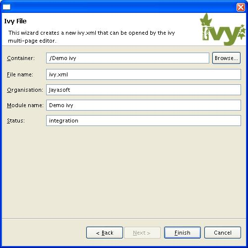
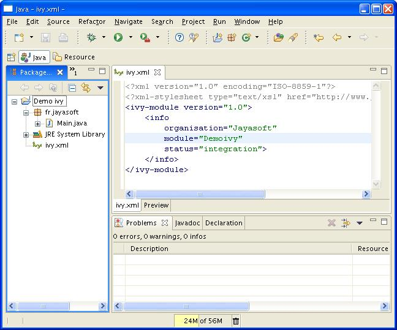
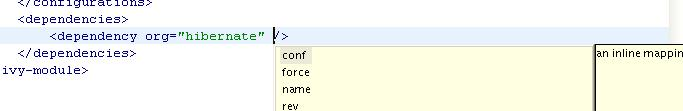
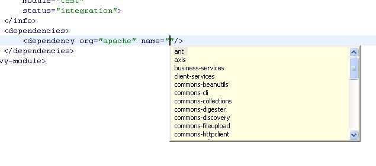
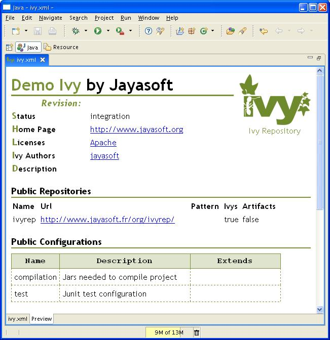

Edit your ivy files easily in eclipse with the <a href="index.html">IvyDE</a> Plugin editor.<br/> <a href="index.html">IvyDE</a> brings creation wizard, html preview and completion for Ivy xml tag, attributes but also for attributes' values!<br/> Choose an organisation and browse thru its projects and revisions.<br/> <h1>Content</h1> <ul> <li><a href="#wizard">Wizard</a></li> <li><a href="#editor">Editor</a></li> <ul> <li><a href="#xmleditor">XML Editor</a></li> <li><a href="#htmlrendering">Html Rendering</a></li> </ul> </ul> <h1><a name="wizard">Wizard</a></h1> IvyDE comes with a wizard that allow you to create an ivy file for your projet.<br/> To open the wizard choose Fle->New->Other in the eclipse menu (Ctrl+N by default)<br/> The Ivy wizard is accesible in the category Other. Select it then click Next<br/><br/> <img src="images/wizard1.jpg"/><br/><br/> The wizard contains only one page, and is very simple.<br/><br/> <br/> <ol><b>Wizard fields:</b> <li> Container : you have to select the targeted project.(This is already set if you access the wizard thanks right click menu on your project root folder)</li> <li> File name : the ivy file name.(ivy.xml by default and its better to keep it in most of case)</li> <li> Organisation : the component owner name.(your company name or the company that provides the component if you are writing ivy file for 3rd party jars). Note this value can be set in the <a href="../ivyde.html#pref">ivy preference page</a></li> <li> Module name : the component name.</li> <li> Status : the status of the project. (integration by default since we have just created its ivy file :-). Please refer to ivy documentation for more details )</li> </ol> When the form is correctly filled you can press Finish button. Eclipse will automatically open the ivy <a href="editor.html#editor">editor</a>.<br/> <h1><a name="editor">Ivy Editor</a></h1> <h2><a name="xmleditor">Xml Editor</a></h2><br/> <br/><br/> The Ivy's eclipse editor provides xml syntaxic coloration, tag completion, tag's attribute names completion, and for dependency and configuration tag value completion.<br/> Completion comes with contextual help. The completion popup is displayed when hitting simultaneously the CTRL and the SPACE keys.</br> <ul><b>Available completions:</b> <li><b>Xml structure</b> : allow you quickly inserts the good tag at its right place. If the tag can have nested childs both notations, simple tag and open tag, are proposed<br/><br/><img src="images/completion1.jpg"/></li> <li><b>Tag attributes</b> : when your cursor is placed in a tag brackets the completion show available attributes for the enclosing tag.<br/><br/></li> <li><b>Attributes values</b> : when your cursor is placed in the quote of an attribute value the completion shows available values for the matching attribute. <br/> <ul>Available value completion <li> <i>info :</i> organisation (pref based), module (eclipse project name), </li> <li> <i>info/ivyauthor : </i>name(pref based), url (pref based)</li> <li> <i>info/description : </i>homepage (pref based)</li> <li> <i>info/license : </i>name </li> <li> <i>info/repository : </i> name (the other attributes depend on it), url, ivys, pattern, artifacts</li> <li> <i>configurations/conf : </i> visibility, deprecated, extends </li> <li> <i>publications/artifact : </i>type, conf, ext</li> <li> <i>dependencies/dependency :</i> org, name, rev are resolved thanks ivy using the ivyconf set in the <a href="index.html#project_pref">project ivy preference page</a>. If not set to "default" ivy uses its defaults resolvers configuration (ie ivyrep + ibiblio), and if not set ivy uses the ivyconf set in the <a href="index.html#pref">eclipse ivy preference page</a>. conf values are computed from current ivy file and the dependency ivy file if any.<br/> <br/></li> </ul> </li> </ul> <h2><a name="htmlrendering">Html rendering</a></h2><br/> Ivy editor is a multi tabs editor. Located on the bottom of the editor you will found a tab named preview that allows to view the ivy file as an html file.<br/> Note : for the moment, as we let the browser do the XSLT processing on a remote file this feature only work with IE. Mozilla browser will display a blank page due its security policy. (If you know a workaround please put it on the mailing list)<br/><br/> 